第4章：画面を整えよう
ビュー（画面）を設定して、使いやすいアプリに仕上げます
4-1 ビュー（View）の基本を理解する
AppSheetでは、アプリの画面のことを 「ビュー（View）」 と呼びます。第3章で設定したデータを「どのように表示するか」をビューで決めていきます。
■ 画面遷移の基本フロー
備品管理アプリでは、以下の3つの画面が基本の遷移パターンになります。
データの一覧を表示
1件の詳細を表示
データの追加・編集
■ 主なビュータイプ
AppSheetには多くのビュータイプがありますが、初級編では以下を使います。★マークが今回設定するビューです。
4-2 備品一覧のビューを設定する（Deck View）
アプリ作成時に自動生成された「備品一覧」のビューをカスタマイズして、見やすいカード形式の一覧画面にします。
■ ビュー設定画面を開く
左ナビゲーションの 「App」 → 「Views」 をクリックします。
ビュー一覧から 「備品一覧」 をクリックして設定画面を開きます。
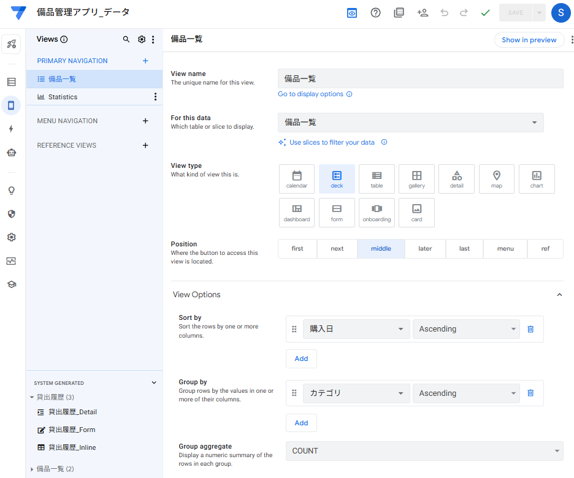
Views でビュー一覧が表示され、「備品一覧」を選択している画面" style="width:100%; border-radius:8px; border:1px solid #d4dce8;">■ View type を「deck」に設定する
「View type」 のアイコン一覧から 「deck」 を選択します（青くハイライトされます）。
プレビュー画面にカード形式の一覧が表示されることを確認します。
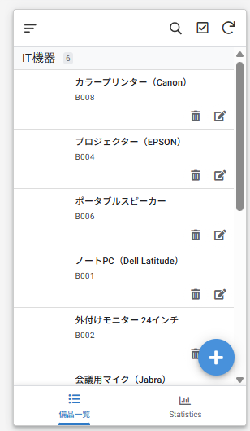
■ 表示項目をカスタマイズする
Deck Viewのカードに表示する項目を設定します。以下の設定を確認・変更してください。
| 設定項目 | 設定値 | 説明 |
|---|---|---|
| View type | deck | カード形式の一覧表示 |
| For this data | 備品一覧 | 表示するテーブル |
| Sort by | 備品ID - Ascending | ID順に並べ替え |
| Group by | カテゴリ | カテゴリごとにグループ化 |
| Primary header | 備品名 | カードのメインタイトル |
| Secondary header | 備品ID | サブタイトル |
| Summary column | 設置場所 | 追加情報の表示 |
| Main image | 画像（Auto assign） | カードに表示するサムネイル画像 |
ビュー設定画面で上記の各項目を設定します。ドロップダウンから対応するカラム名を選択してください。
プレビュー画面で、カードに「備品名」「備品ID」「設置場所」が表示され、カテゴリごとにグループ化されていることを確認します。Main imageは 「Auto assign（画像）」 のままでOKです。
右上の 「Save」 ボタンで保存します。
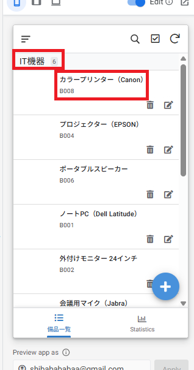
4-3 貸出履歴のビューを追加する
現在は「備品一覧」のビューしかないため、「貸出履歴」用のビューを新規作成します。貸出履歴はデータの一覧性が重要なので、Table View（表形式）を使います。
■ 新しいビューを作成する
App → Views の画面で、左側の「PRIMARY NAVIGATION」の横にある 「＋」 ボタンをクリックします。
「Add a new view」のダイアログが表示されます。下部の 「Create a new view」 ボタンをクリックします。
「View name」 に 「貸出履歴」 と入力します。
「For this data」 のドロップダウンから 「貸出履歴」 テーブルを選択します。
「View type」 のアイコン一覧から 「table」 を選択します。
「Position」 のボタン一覧から 「next」 を選択します（備品一覧の隣に配置されます）。
下にスクロールして 「View Options」 セクションを開き、「Sort by」 の 「Add」 ボタンをクリックします。カラムに 「貸出日」 を選択し、順序を 「Descending」（新しい順）に設定します。
右上の 「Save」 ボタンで保存します。
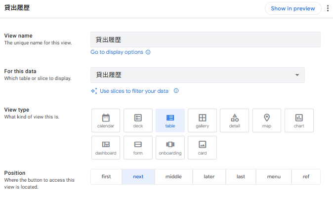
■ Table Viewの表示設定
| 設定項目 | 設定値 | 説明 |
|---|---|---|
| View type | table | 表形式の一覧表示 |
| For this data | 貸出履歴 | 表示するテーブル |
| Sort by | 貸出日 - Descending | 新しい貸出順に表示 |
| Position | next | 備品一覧の隣に配置 |
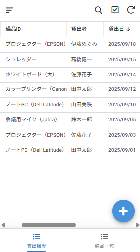
・Deck View … 画像やメイン情報を目立たせたいとき（備品一覧向き）
・Table View … 多くの項目を一覧で比較したいとき（貸出履歴向き）
4-4 Detail View と Form View を確認する
Detail View（詳細画面）と Form View（入力画面）はAppSheetが 自動で生成 します。左サイドバーの下部にある 「SYSTEM GENERATED」 セクションに格納されています。ここでは場所の確認と、プレビューでの動作確認を行います。
■ SYSTEM GENERATED の場所を確認する
App → Views の画面で、左サイドバーを下にスクロールします。
「SYSTEM GENERATED」 セクションに以下のビューが自動作成されていることを確認します。
| ビュー名 | 種類 | 役割 |
|---|---|---|
| 貸出履歴_Detail | Detail | 貸出1件の詳細情報を表示する画面 |
| 貸出履歴_Form | Form | 貸出データの新規追加・編集用フォーム |
| 貸出履歴_Inline | Inline | 備品の詳細画面内に埋め込まれる貸出履歴一覧 |
| 備品一覧_Detail | Detail | 備品1件の詳細情報を表示する画面 |
| 備品一覧_Form | Form | 備品データの新規追加・編集用フォーム |
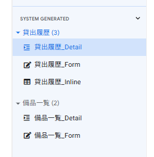
■ Detail View をプレビューで確認する
プレビュー画面で 「備品一覧」 の任意のカードをタップします。
備品の詳細画面（Detail View）が表示されます。備品名、カテゴリ、設置場所、数量などの情報が縦に並んで表示されていることを確認します。
画面下部に、Refで紐づけた 「貸出履歴」のインラインビュー が自動的に表示されていることを確認します（第3章で設定したVirtual Columnによるもの）。
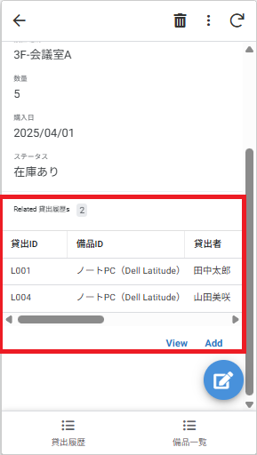
■ Form View をプレビューで確認する
プレビュー画面で「貸出履歴」の 「＋」ボタン（新規追加）をタップします。
入力フォーム（Form View）が表示されます。「備品ID」がドロップダウン（Refによる参照）、「貸出日」「返却予定日」がカレンダー入力になっていることを確認します。
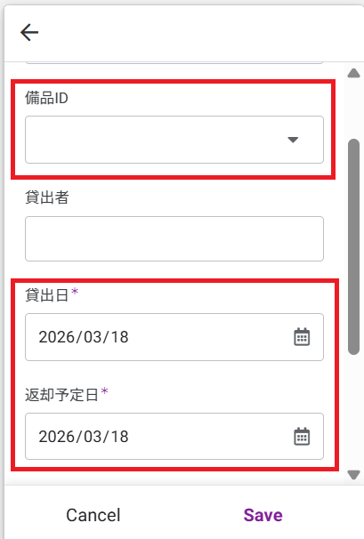
■ Detail View の表示順を変更する（任意）
Detail Viewのカラム表示順を変更したい場合は、SYSTEM GENERATEDから設定を変更できます。
左サイドバーの「SYSTEM GENERATED」から、変更したいビュー（例：「貸出履歴_Detail」）をクリックします。
「View Options」 セクションの 「Column order」 で 「Manual」 を選択します。
表示されたカラム名の一覧を ドラッグ＆ドロップ で並べ替えます。
右上の 「Save」 ボタンで保存します。
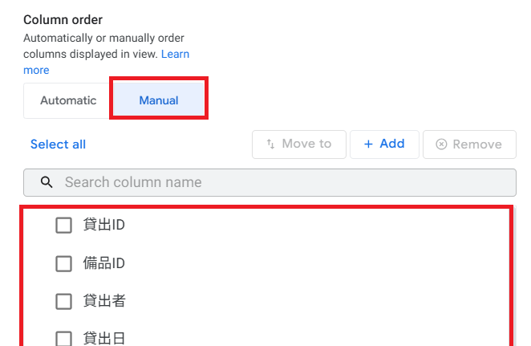
Column order で「Manual」を選択し、カラム順をドラッグで変更している画面" class="sharp">4-5 ナビゲーションメニューを整理する
アプリ下部のナビゲーションメニュー（タブバー）に表示するビューを設定します。ユーザーがメニューをタップして画面を切り替える仕組みです。
■ ナビゲーションの仕組み
ビューの 「Position」 設定でナビゲーションへの表示を制御します。
| Position | 動作 |
|---|---|
| first | ナビゲーションの一番左（ホーム画面の役割） |
| next | 前のビューの右隣に配置 |
| middle | ナビゲーションの中間に配置 |
| later | 中間よりも右寄りに配置 |
| last | ナビゲーションの一番右に配置 |
| menu | ハンバーガーメニュー内に格納（ナビバーに直接表示しない） |
| ref | ナビゲーションに表示しない（他のビューから参照される場合用） |
■ 各ビューのPosition設定
App → Views で各ビューの設定を開きます。
以下の通りにPositionを設定してください。
| ビュー名 | Position | View Icon | 説明 |
|---|---|---|---|
| 備品一覧 | first | box（📦） | ホーム画面として一番左に配置 |
| 貸出履歴 | next | clipboard（📋） | 備品一覧の隣に配置 |
「View icon」 を設定するには、ビュー設定画面の「Display」セクションにある 「Icon」 をクリックしてアイコンを選択します。
右上の 「Save」 ボタンで保存します。プレビュー下部のナビゲーションに2つのメニューが表示されることを確認します。
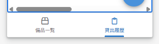
4-6 アプリのブランディング（テーマ・アイコン）
アプリの見た目を整えて、より使いやすく見栄えの良いアプリにしましょう。AppSheetの Settings メニューからテーマカラーやアプリアイコンを設定できます。
■ テーマカラーの設定
左ナビゲーションの 「Settings」（⚙️） → 「Theme & Brand」 をクリックします。
「Primary color」 でアプリのメインカラーを設定します。ヘッダーやボタンの色が変わります。
プレビューで色の変化を確認し、「Save」 で保存します。
| 設定項目 | 推奨値 | 説明 |
|---|---|---|
| Primary color | #1A56A0（お好みで） | ヘッダー・ボタン・リンクの色 |
| App logo | 会社ロゴ画像（196×196px推奨） | ヘッダー左に表示されるアイコン |
| Background image | （任意） | アプリの背景画像 |
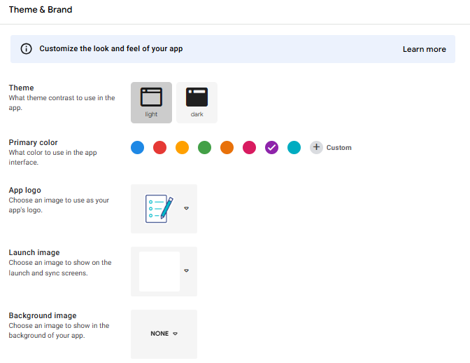
■ アプリ名の変更
左ナビゲーションの 「Settings」（⚙️） → 「Information」 をクリックします。
「App Properties」セクションの 「Short Name」 を 「備品管理アプリ」 に変更します。
必要に応じて 「Short Description」 に簡単な説明（例：「社内備品の管理・貸出を行うアプリ」）を入力します。
右上の 「Save」 ボタンで保存します。
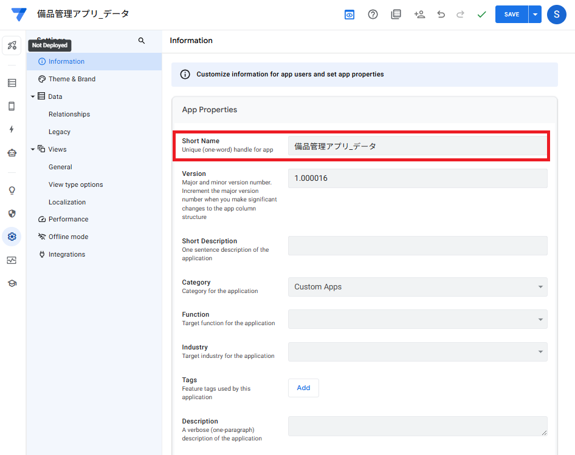
App Properties でShort Nameを「備品管理アプリ」に変更している画面" class="sharp">■ 第4章のまとめ
| No. | やったこと | ポイント |
|---|---|---|
| 1 | ビュータイプの理解 | 一覧→詳細→入力フォームの基本遷移パターン |
| 2 | 備品一覧のDeck View設定 | カード形式で見やすく、カテゴリでグループ化 |
| 3 | 貸出履歴のTable View追加 | 表形式で一覧性を重視 |
| 4 | Detail View・Form View確認 | 自動生成されるので動作確認のみ |
| 5 | ナビゲーションメニュー設定 | Positionで表示位置を制御 |
| 6 | ブランディング設定 | テーマカラー・アプリ名・ロゴの変更 |
・ナビゲーションメニューに「備品一覧」「貸出履歴」の2つが表示されている
・備品一覧がカード形式で表示されている
・備品をタップすると詳細画面が表示される
・「＋」ボタンで入力フォームが表示される